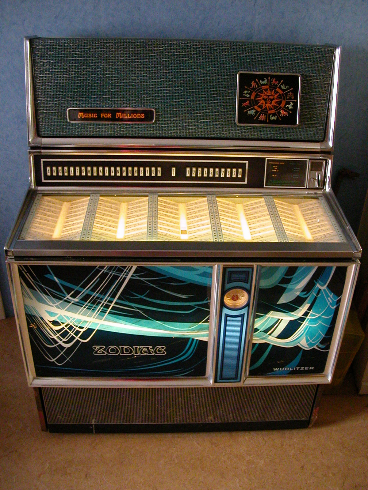
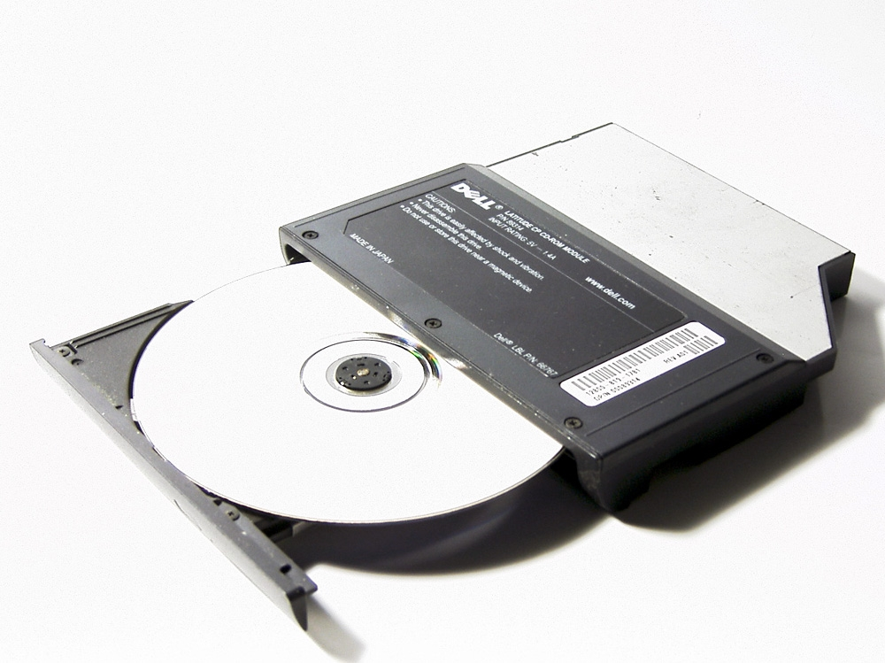

Le premier moyen de diffusion de la musique dans le monde est le phonogramme. Sorti en 1877, ce fut une révolution dans le monde de la musique.
Il fallait faire tourner une manivelle qui elle, enclenchait un autre mécanisme qui faisait, lui, tourner un cylindre recouvert d'une feuille d'étain.
Pour enregistrer un son, il fallait le produiredans un tube conique dont l'autre extrémité était composée d'un stylet (aiguille).
L'air comprimé dans le tube faisait alors vibrer le stylet, qui gravait dans la matière du cylindre des sillons provoqués par ces mouvements enregistrant ainsi
tout bruits.
Le phonogramme était utilisé pour écouter des instruments de musique, mais aussi pour transporter des informations ou des directives parlées, ainsi que comme
moyen d'apprentissage des langues.
Le Jukebox est un appareil permettant aux clients d’un lieu public (bar et cafés américains…) de lire automatiquement une musique enregistrée sur un vinyle/disque. Il s’agit en général d’une machine payante permettant aux clients de choisir leur musique. Le mot juke-box signifie en français un bar où l’on danse, ce terme fut inventé dans les années 30 aux Etats-Unis. Le 22 novembre 1889 au salon du palais royal de San Francisco, Louis Glass installa le 1er juke-box, il reprit l’idée de Thomas Edison et Émile Berliner, c’était un gramophone géant (phonographe avec un vinyle). Dans un premier temps, cela permettait qu’un maximum de personnes puisse écouter la même musique, et au fil des années, le juke-box s’est perfectionné et a permis de leur offrir un large choix d’enregistrement.
Le lecteur CD permet de lire la musique grâce au disque compact (autrement dit CD). Le lecteur CD a été créé en 1984 par Sony et Philips, qui avaient eu toutes les deux la même idée et ont donc mis leurs recherches en commun. Le CD est un support utilisé pour stocker des données comme la musique, les vidéos, les photos… mais une fois ces données stockées, elles ne pourront plus être modifiées. Tout comme le Walkman, l’écoute de la musique se fait de façon individuelle. Cependant, il était toujours possible de brancher le lecteur CD à des enceintes afin de partager l’écoute.
Depuis les années 2000, Internet a permis une écoute illimitée, parfois payante et en ligne de toutes sortes de musique. Ce qui nous permet de découvrir plusieurs styles musicaux grâce au partage des données. Les sites permettant cette écoute sont par exemple Youtube, Deezer, Spotify, et les radios mises en ligne… Pour que cette écoute soit gratuite, certains sites utilisent de la publicité. Le premier site de musiques à la demande fut créé le 22 août 2007, par Daniel Marhely et Jonathan Benassaya, son nom est Deezer.